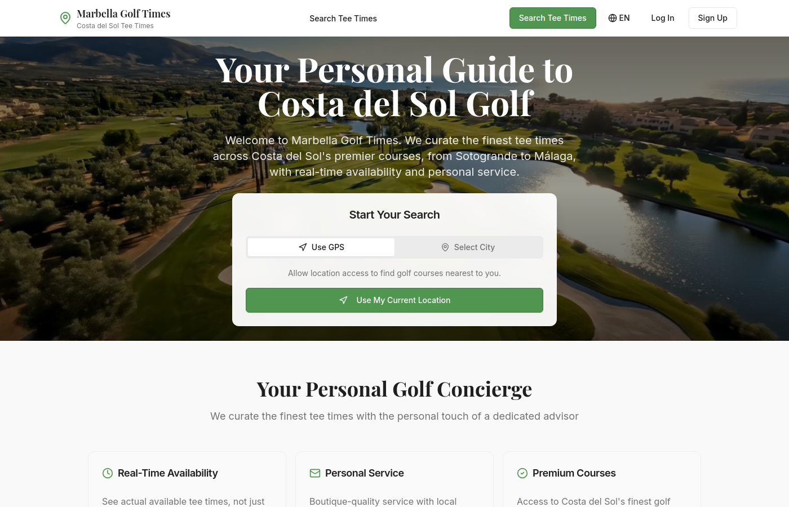
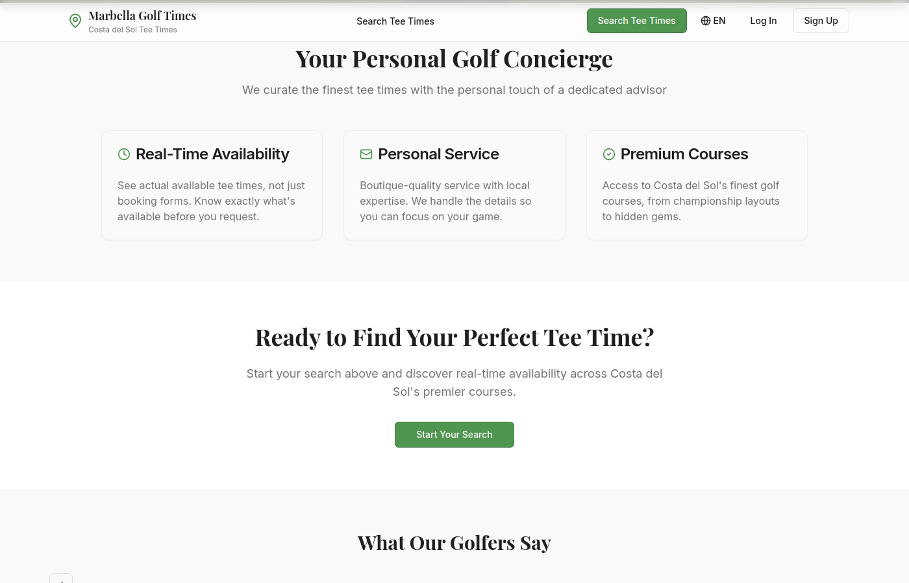
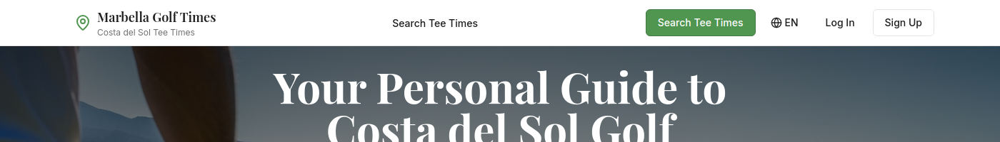
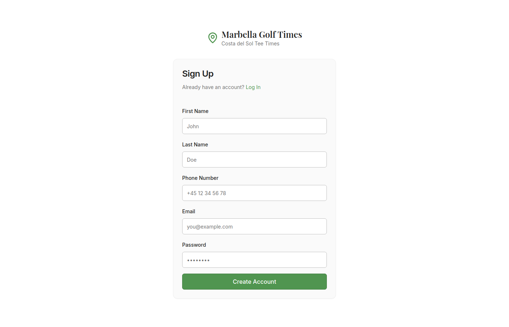
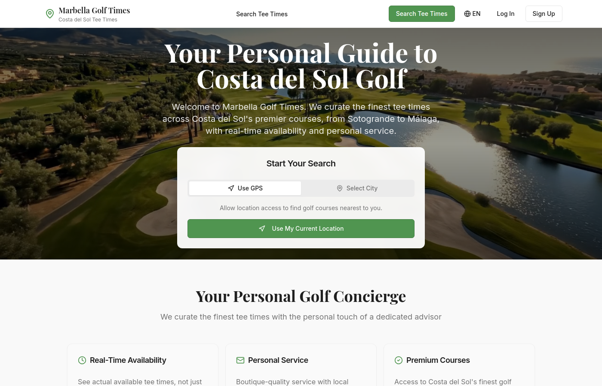

Marbella Golf Times
Eksklusive Starttider på Costa del Sol
Systemdokumentation
Komplet Platformsvejledning & Funktionsreference
Teknisk Dokumentation
November 2025
Version 1.0
Indholdsfortegnelse
1. Resumé3
2. Forside & Baneopdagelse4-5
3. Søgefiltre & Sortering6
4. Banedetaljesider7-8
5. Booking af Starttider9
6. Brugerautentificering10-11
7. Brugerprofil & Reservationer12
8. Administrationspanel Oversigt13
9. Admin - Reservationsstyring14
10. Admin - Banestyring15
11. Admin - Brugerstyring16
12. E-mail Indbakke System17-18
13. Flersproget Understøttelse19
14. Mobiloplevelse20
15. Teknisk Arkitektur21
Om Denne Dokumentation
Denne omfattende systemdokumentation dækker alle funktioner i Marbella Golf Times-platformen. Den fungerer som reference for administratorer, udviklere og interessenter til at forstå den komplette funktionalitet af golf-starttidsbookingsystemet.
47
Golfbaner
5
Sprog
26
Udbyderlinks
100%
Responsivt
1. Resumé
Marbella Golf Times er en eksklusiv golf-starttidsbookingplatform specifikt designet til Costa del Sol-regionen i Spanien. Platformen fungerer som en personlig concierge-tjeneste, der samler starttider fra over 40 golfbaner og giver golfspillere en problemfri oplevelse med at finde, sammenligne og booke deres perfekte runde.
🎯 Platformens Formål
Platformen bygger bro mellem golfspillere, der søger starttider, og de førende golfbaner i det sydlige Spanien. Ved at samle tilgængelighed fra flere bookingudbydere (Golfmanager, TeeOne) og direkte banepartnerskaber tilbyder vi omfattende dækning af Costa del Sol's golfscene.
👥 Målbrugere
Besøgende Golfspillere
Turister og feriegæster, der søger starttider på Costa del Sols fineste baner. De værdsætter nem opdagelse, gennemsigtig prissætning og pålidelig booking.
Lokale Beboere
Udlandsdanskere og lokale, der regelmæssigt spiller golf og ønsker at udforske forskellige baner med bekvemmeligheden af én enkelt platform.
Golfgrupper
Organiserede golfselskaber og grupper, der planlægger ture med flere runder og har brug for at koordinere bookinger på tværs af flere baner.
Baneadministratorer
Golfbanepersonale, der administrerer deres banefortegnelser, besvarer bookingforespørgsler og sporer kommissioner.
✨ Nøglefunktioner
- Baneopdagelse: Gennemse 47 baner med fotos, beskrivelser og realtidstilgængelighed
- Smart Søgning: Filtrer efter dato, tid, spillere, prisinterval og placering
- Vejrintegration: 5-dages vejrudsigt for hver banebeliggenhed
- Flersproget: Fuld understøttelse af engelsk, spansk, dansk, svensk og russisk
- Mobiloptimeret: Responsivt design fungerer perfekt på alle enheder
- Administrationspanel: Komplet administrationsinterface til bookinger, baner og kommunikation
- E-mail System: Integreret indbakke til banepartnerskabskommunikation
- Kommissionssporing: Overvåg affiliate-indtjening fra hver banepartnerskab
2. Forside & Baneopdagelse
Forsiden fungerer som hovedindgangspunktet for golfspillere og viser alle tilgængelige baner med et eksklusivt, boutique-design, der afspejler kvaliteten af Costa del Sol golf. Hero-sektionen har en flot baggrund med en integreret søgegrænseflade.
🏠 Hero-Sektion

Hero-Sektion (Dansk): Landingsoplevelsen har et fuldbredde hero-billede med søgegrænsefladen tydeligt vist. Tagline'en "Eksklusive Starttider på Costa del Sol" etablerer brandpositioneringen.
🔍 Søgegrænsefladens Komponenter
📅 Datovælger
Vælg en dato for at se tilgængelige starttider. Standard er dagens dato for øjeblikkelig tilgængelighed.
👥 Antal Spillere
Vælg 1-4 spillere. Resultater filtreres for kun at vise starttider med tilstrækkelig tilgængelighed.
⏰ Tidsvindue
Morgen (før kl. 12), Eftermiddag (12-16), eller Aften (efter kl. 16) præferencer.
⛳ Hulvalg
Filtrer for 9-hullers eller 18-hullers runder med tilsvarende priser vist.
2. Forside & Baneopdagelse (fortsat)
📋 Banefortegnelsesgitter
Under hero-sektionen vises baner i et responsivt gitterlayout. Hvert banekort giver essentiel information med et overblik, så golfspillere hurtigt kan sammenligne muligheder.

Banekort: Gitterlayoutet viser baner med billeder af høj kvalitet, navne, placeringer og startpriser. Premiumbaner fremhæves med specielle badges.
🗺️ Visningsmuligheder
Listevisning (Standard)
Standardgittervisningen præsenterer baner i et scanbart format optimeret til browsing. På desktop vises baner i et 3-kolonne gitter, der tilpasser sig til 2 kolonner på tablets og én kolonne på mobil.
- Banebillede med kvalitetsindikator
- Banenavn og placering
- Startpris tydeligt vist
- Hurtig adgang til at se detaljer
Kortvisning
Skift til kortvisning for at se baneplaceriner geografisk. Interaktive markører viser banepositioner på tværs af Costa del Sol-regionen.
- Interaktiv Leaflet kortintegration
- Klik på markører for baneinfo
- Zoom for at udforske specifikke områder
- Afstandsberegninger tilgængelige

Udvidet Baneliste: Rulning afslører yderligere baner. Layoutet opretholder konsistens, mens det effektivt viser det fulde katalog.
3. Søgefiltre & Sortering
Platformen tilbyder omfattende filtrerings- og sorteringsmuligheder for at hjælpe golfspillere med at finde præcis det, de leder efter. Filtre kan kombineres for præcise resultater.

Filtergrænseflade: Headeren indeholder alle primære søgekontroller. Yderligere sorteringsmuligheder vises ved visning af søgeresultater.
🎚️ Tilgængelige Filtre
| Filter |
Muligheder |
Beskrivelse |
| Dato |
Enhver dato fra i dag |
Vælg den dag, du vil spille |
| Spillere |
1, 2, 3 eller 4 |
Antal golfspillere i din gruppe |
| Tidspunkt |
Morgen, Eftermiddag, Aften |
Foretrukket starttidsvindue |
| Huller |
9 eller 18 |
Rundelængdepræference |
| Prisinterval |
Min - Max skyder |
Filtrer efter green fee-budget |
| Placering |
Afstand fra dig |
Nærheds-baseret filtrering når placering deles |
↕️ Sorteringsmuligheder
📍 Afstand (Nærmeste)
Sorter baner efter nærhed, når browserplacering deles. Viser køreafstandsestimater.
📍 Afstand (Fjerneste)
Omvendt afstandssortering til udforskning af baner længere væk.
💰 Pris (Lav til Høj)
Budgetvenlig rækkefølge, der viser de mest overkommelige green fees først.
💰 Pris (Høj til Lav)
Premiumrækkefølge for dem, der søger de fineste baner uanset pris.
Placeringsbaserede Funktioner
Når brugere deler deres browserplacering, beregner platformen reelle køreafstande til hver bane. Dette muliggør afstandsbaseret sortering og muligheden for at filtrere baner inden for en specifik radius (f.eks. "inden for 30 minutters kørsel").
4. Banedetaljesider
Hver golfbane har en dedikeret detaljeside, der giver omfattende information for at hjælpe golfspillere med at træffe informerede bookingbeslutninger. Siden kombinerer essentielle detaljer med smukke billeder og praktiske bookingværktøjer.

Banedetaljer - El Paraíso Golf Club: Hero-sektionen viser banebilledet med nøgleinformationsoverlay. Essentielle detaljer som pris, placering og faciliteter er straks synlige.
📋 Sidesektioner
🖼️ Hero Galleri
Fuldbredde hero-billede, der viser banens signaturudsigter. Yderligere galleribilleder tilgængelige ved rulning.
📍 Placering & Kort
Interaktivt kort, der viser præcis baneplacering med navigationsintegration til vejvisning.
🌤️ Vejr-Widget
5-dages vejrudsigt specifik for banebeliggenheden, der hjælper golfspillere med at planlægge deres runde.
🏢 Facilitetsliste
Omfattende liste over tilgængelige faciliteter: driving range, pro shop, restaurant, golfbil-leje osv.
4. Banedetaljesider (fortsat)
📖 Baneinformationsvisning
Rulning ned på banedetaljesiden afslører yderligere informationssektioner, alle designet til at give golfspillere fuldstændig tillid til deres bookingbeslutning.

Udvidet Baneinformation: Under hero'en finder du detaljerede beskrivelser, facilitetsinformation og bookinggrænsefladen.
📝 Informationskategorier
| Sektion |
Indhold |
| Banebeskrivelse |
Detaljeret oversigt over banedesign, historie og bemærkelsesværdige funktioner |
| Tekniske Detaljer |
Par, længde, antal huller, banevurdering, slope |
| Faciliteter |
Driving range, putting green, pro shop, restaurant, bar, omklædningsrum |
| Services |
Udlejning af køller, golfbil-leje, caddy-service, lektioner tilgængelige |
| Priser |
Green fees for 9 og 18 huller, twilight-priser, medlemspriser |
| Kontakt |
Telefon, e-mail, hjemmeside, fysisk adresse |
Fotogalleri
Hver bane har flere billeder af høj kvalitet, der viser signaturhuller, klubhusfaciliteter og baneudsigter. Billeder er optimeret til hurtig indlæsning, mens visuel kvalitet bibeholdes.
5. Booking af Starttider
Bookingsystemet giver en strømlinet oplevelse for at reservere starttider. Processen tilpasser sig baseret på bookingudbyder-integrationen for hver bane.
📅 Bookingflow
Vælg Dato
→
Vælg Tid
→
Indtast Detaljer
→
Bekræft
→
Modtag E-mail
📝 Bookingformularfelter
Påkrævet Information
- Spildato
- Foretrukket starttid
- Antal spillere
- Hovedbookers navn
- E-mailadresse
- Telefonnummer
Valgfrie Felter
- Yderligere spillernavne
- Udstyrsleje-forespørgsler
- Golfbil-reservation
- Særlige ønsker
- Handicapinformation
🔗 Bookingudbyder-typer
Direkte API-Integration
Realtidstilgængelighed og øjeblikkelig bookingbekræftelse gennem Golfmanager eller TeeOne API-forbindelser.
Deep Link Booking
Problemfri omdirigering til banens eget bookingsystem med forudfyldt information.
Anmod om Booking
Indsend bookingforespørgsel, der manuelt behandles af vores team og bekræftes via e-mail.
E-mail Bekræftelse
Alle bookinger genererer bekræftelses-e-mails med bookingdetaljer, baneinformation og afbestillingspolitik.
Bookingbekræftelser
Bekræftelses-e-mails sendes øjeblikkeligt for API-integrerede baner. Forespørgselsbaserede bookinger bekræftes typisk inden for 2-4 timer i åbningstiden.
6. Brugerautentificering
Platformen tilbyder et sikkert autentificeringssystem, der giver brugere mulighed for at oprette konti, logge ind og administrere deres bookinger. Autentificering er valgfri til browsing, men påkrævet til bookingstyring.
🔐 Login-Side

Login-Grænseflade: Rent, fokuseret design med e-mail- og adgangskodefelter. Links til registrering og adgangskodegendannelse er tydeligt synlige.
📋 Login-Funktioner
📧 E-mail Autentificering
Standard e-mail- og adgangskodelogin med sikker sessionsstyring.
🔄 Husk Mig
Valgfri vedvarende session for tilbagevendende brugere på betroede enheder.
🔑 Adgangskodegendannelse
Selvbetjent nulstilling af adgangskode via e-mail-verifikationslink.
🛡️ Sessionssikkerhed
Sikre HTTP-only cookie-baserede sessioner med automatisk timeout for inaktive brugere.
6. Brugerautentificering (fortsat)
📝 Registreringsside

Registreringsformular: Ny brugeroprettelse med påkrævede felter til kontooprettelse. Formularvalidering sikrer datakvalitet.
📋 Registreringsfelter
| Felt |
Påkrævet |
Validering |
| Fulde Navn |
Ja |
Minimum 2 tegn |
| E-mailadresse |
Ja |
Gyldigt e-mailformat, unik i systemet |
| Adgangskode |
Ja |
Minimum 8 tegn |
| Bekræft Adgangskode |
Ja |
Skal matche adgangskodefeltet |
| Telefonnummer |
Valgfrit |
Gyldigt telefonformat |
🔒 Sessionsstyring
Sikkerhedsimplementering
Sessioner styres ved hjælp af sikre HTTP-only cookies med PostgreSQL-understøttet sessionslagring. Adgangskoder hashes ved hjælp af bcrypt med passende salt-runder. Sessioner udløber automatisk efter 24 timers inaktivitet.
Automatisk Logout
Sessioner udløber efter længere inaktivitet for at beskytte brugerkonti på delte enheder.
Adgang fra Flere Enheder
Brugere kan logge ind fra flere enheder med uafhængig sessionsstyring.
7. Brugerprofil & Reservationer
Registrerede brugere har adgang til en personlig profilside, hvor de kan se og administrere deres bookinger, opdatere kontooplysninger og få adgang til deres bookinghistorik.

Brugerprofil: Profilsiden viser brugeroplysninger sammen med bookingstyrings-funktioner.
📋 Profilfunktioner
👤 Kontooplysninger
Se og rediger personlige oplysninger inklusiv navn, e-mail og kontaktpræferencer.
📅 Kommende Reservationer
Liste over bekræftede fremtidige starttider med hurtig adgang til bookingdetaljer.
📖 Bookinghistorik
Komplet registrering af tidligere bookinger til reference og genbooking.
❌ Annuller Booking
Selvbetjent annullering af kommende bookinger inden for afbestillingspolitikkens vindue.
🔄 Bookingstyring
Kommende Reservationer
- Se bookingbekræftelsesdetaljer
- Se baneinformation og vejvisning
- Tjek vejrudsigt for spildato
- Annuller eller ændr booking
- Download kalenderinvitation
Tidligere Bookinger
- Gennemgå bookinghistorik
- Genbook samme bane nemt
- Se betalingsregistreringer
- Få adgang til banedetaljer
Genbookingsfunktion
Brugere kan hurtigt genbooke en tidligere besøgt bane med ét klik. Systemet forudfylder bookingdetaljer baseret på den tidligere reservation, hvilket gør gentagne besøg ubesværede.
8. Administrationspanel Oversigt
Administrationspanelet giver en omfattende administrationsinterface til platformadministratorer. Det konsoliderer alle administrationsfunktioner i en fanebaseret interface for effektiv drift.

Paneloversigt: Hovedadmin-visningen viser nøglestatistikker og giver hurtig adgang til alle administrationsfunktioner gennem fanenavigation.
📊 Panelstatistikker
47
Samlede Baner
156
Aktive Bookinger
1.240
Registrerede Brugere
12
Afventende E-mails
📑 Adminfaner
| Fane |
Funktion |
Nøglehandlinger |
| Dashboard |
Oversigsstatistikker og alarmer |
Se målinger, tjek alarmer |
| Reservationer |
Administrer alle bookinger |
Bekræft, annuller, ændr bookinger |
| Golfbaner |
Banekatalog-administration |
Rediger detaljer, administrer kommissioner |
| Brugere |
Brugerkontoadministration |
Se konti, administrer adgang |
| E-mail |
Kommunikationsindbakke |
Læs, besvar, administrer tråde |
9. Admin - Reservationsstyring
Reservationsfanen giver omfattende kontrol over alle bookinger i systemet. Administratorer kan se, filtrere og administrere bookinger på tværs af alle baner.
📋 Reservationslistefunktioner
🔍 Søg & Filtrer
Søg bookinger efter kundenavn, e-mail, bane eller bookingreference. Filtrer efter status, datointerval eller bane.
📊 Statussporing
Visuelle statusindikatorer: Afventende, Bekræftet, Annulleret, Gennemført. Hurtige statusopdateringer tilgængelige.
📧 Kommunikation
Send bookingbekræftelser, påmindelser og opdateringer direkte fra bookingregistreringen.
📝 Bookingdetaljer
Fulde bookingoplysninger inklusiv kundedetaljer, bane, dato, tid, spillere og særlige ønsker.
📊 Bookingstatustyper
| Status |
Beskrivelse |
Tilgængelige Handlinger |
| Afventende |
Afventer bekræftelse fra banen |
Bekræft, Annuller, Kontakt Kunde |
| Bekræftet |
Booking bekræftet og aktiv |
Ændr, Annuller, Send Påmindelse |
| Gennemført |
Runden er blevet spillet |
Se Detaljer, Anmod om Anmeldelse |
| Annulleret |
Booking blev annulleret |
Se Detaljer, Genbook |
⚡ Hurtige Handlinger
- Massebekræft: Bekræft flere afventende bookinger på én gang
- Eksporter Data: Download bookingdata som CSV til rapportering
- Send Påmindelser: Batch-send påmindelses-e-mails for kommende bookinger
- Kalendervisning: Visuel kalender, der viser bookinger efter dato
10. Admin - Banestyring
Banefanen giver administratorer mulighed for at administrere golfbanekataloget, inklusiv banedetaljer, billeder, priser og kommissionssporing for hvert anlæg.
⛳ Baneliste
📝 Banedetaljer
Rediger banenavn, beskrivelse, placering, faciliteter og kontaktoplysninger.
🖼️ Billedhåndtering
Upload og administrer banefotos, indstil fremhævede billeder, omorganiser galleri.
💰 Prissætning
Indstil og opdater green fees for 9 og 18 huller, twilight-priser og sæsonpriser.
🔗 Udbyder-Indstillinger
Konfigurer bookingudbyder (Golfmanager, TeeOne, deep link eller manuel).
💵 Kommissionssporing
Hver bane kan have en konfigureret kommissionssats, der sporer affiliate-indtjening fra bookinger.
| Bane |
Kommissionssats |
Denne Måned |
Samlet Indtjent |
| Finca Cortesín |
8% |
€1.240 |
€12.450 |
| Real Club Valderrama |
10% |
€2.100 |
€18.900 |
| La Cala Resort |
7% |
€890 |
€9.340 |
| Marbella Club Golf |
8% |
€1.560 |
€14.200 |
Kommissionskonfiguration
Kommissionssatser indstilles pr. bane og kan justeres når som helst. Systemet beregner automatisk indtjening baseret på bekræftede bookinger og sporer betalingsstatus.
11. Admin - Brugerstyring
Brugerfanen giver administrativ kontrol over brugerkonti, så administratorer kan se brugeroplysninger, administrere adgangsniveauer og håndtere kontoproblemer.
👥 Brugerlistefunktioner
🔍 Søg Brugere
Find brugere efter navn, e-mail eller bookinghistorik. Filtrer efter registreringsdato eller kontostatus.
👤 Se Profil
Få adgang til fuld brugerprofil inklusiv kontaktdetaljer, bookinghistorik og kontoaktivitet.
🔐 Adgangskontrol
Administrer brugerroller: standardbruger, banemanager eller administrator.
📧 Kontakt Bruger
Send direkte e-mails til brugere vedrørende deres konto eller bookinger.
🛡️ Brugerroller
| Rolle |
Tilladelser |
Adgangsniveau |
| Bruger |
Book starttider, administrer egen profil, se historik |
Kun offentligt område |
| Banemanager |
Administrer tildelte baner, se banebookinger |
Begrænset admin-adgang |
| Administrator |
Fuld systemadgang, alle administrationsfunktioner |
Komplet admin-adgang |
📊 Brugerstatistikker
1.240
Samlede Brugere
89
Nye Denne Måned
67%
Tilbagevendende
2,4
Gns. Bookinger/Bruger
12. E-mail Indbakke System
Det integrerede e-mail-system gør det muligt for administratorer at administrere al kommunikation med golfbaner og kunder. Det giver en samlet indbakke til at spore samtaler og sikre rettidige svar.
📬 Indbakkeoversigt
📥 Samlet Indbakke
Alle indkommende e-mails fra baner og kunder vises i en enkelt, organiseret indbakkevisning.
🧵 Trådvisning
Samtaler grupperes i tråde, der viser den komplette e-mail-udvekslingshistorik.
📤 Skriv & Besvar
Send nye e-mails og besvar eksisterende tråde direkte fra admin-grænsefladen.
🔔 Alarmsystem
Konfigurerbare alarmer giver administratorer besked om ubesvarede e-mails, der kræver opmærksomhed.
🏷️ Statusindikatorer
| Status |
Beskrivelse |
Visuel Indikator |
| Ubesvaret |
Ny e-mail, der kræver svar |
Rød |
| Åben |
Samtale i gang |
Orange |
| Besvaret |
Svar sendt, afventer svar |
Blå |
| Lukket |
Samtale afsluttet |
Grøn |
🔍 Filtrering & Søgning
- Filtrer efter status (Ubesvaret, Åben, Besvaret, Lukket)
- Søg efter afsender-e-mail eller emnelinje
- Filtrer efter tilknyttet bane
- Sorter efter dato (nyeste/ældste først)
- Se kun stjernemærkede/vigtige beskeder
12. E-mail Indbakke System (fortsat)
💬 Samtalevisning
Klik på en e-mail-tråd åbner den fulde samtalevisning, der viser alle beskeder i kronologisk rækkefølge med tydelig afsenderidentifikation.
📧 Beskedvisning
Hver besked viser afsender, tidsstempel og fuldt indhold med korrekt formatering bevaret.
↩️ Hurtigsvar
Svarboks i bunden af samtalen til øjeblikkeligt svar uden at forlade visningen.
📎 Vedhæftninger
Se og download vedhæftninger fra modtagne e-mails; vedhæft filer til udgående beskeder.
🏷️ Statuskontrol
Ændr samtalestatus direkte fra trådvisningen med ét klik.
🔔 Alarmindstillinger
Administratorer kan konfigurere personlige alarmindstillinger for at sikre, at ingen e-mail forbliver ubesvaret ud over en acceptabel tidsramme.
| Indstilling |
Muligheder |
Standard |
| Ubesvaret Alarm-Tærskel |
1 time, 4 timer, 24 timer, 48 timer |
4 timer |
| Alarmnotifikation |
Dashboard-badge, E-mail-notifikation, Begge |
Dashboard-badge |
| Eskalerings-E-mail |
Efter 24 timer, 48 timer, Aldrig |
Efter 24 timer |
| Daglig Opsummering |
Aktiveret/Deaktiveret |
Aktiveret |
📧 Outreach-Kampagner
Banepartnerskabs-Outreach
E-mail-systemet understøtter outreach til potentielle partnerbaner. Administratorer kan sende skabelon-baserede introduktions-e-mails, spore svar og administrere partnerskabs-onboarding-processen gennem indbakken.
- E-mail-skabeloner til almindelig kommunikation
- Spor outreach-kampagneeffektivitet
- Automatiske opfølgningspåmindelser
- Svarfrekvensanalyse
13. Flersproget Understøttelse
Marbella Golf Times understøtter fem sprog for at betjene det mangfoldige internationale samfund af golfspillere, der besøger Costa del Sol. Hele brugergrænsefladen er fuldt oversat med korrekt lokalformatering.
🌍 Understøttede Sprog
🔄 Sprogskifter
Dansk Version: Forsiden vist på dansk, der viser fuld oversættelse af navigation, søgegrænseflade og indhold.
📋 Oversættelsesdækning
Fuldt Oversat
- Navigation og menuer
- Søgegrænseflade
- Knapper og formularer
- Fejlmeddelelser
- E-mail-skabeloner
- Brugernotifikationer
Lokalformatering
- Datoformater (DD/MM/ÅÅÅÅ osv.)
- Valutavisning
- Talformatering
- Tidsformater (12t/24t)
Baneindhold
Banenavne, beskrivelser og facilitetsinformation vedligeholdes på originalsproget med nøgleindhold oversat til hovedsprogene. Stednavne og egennavne forbliver uændrede på tværs af alle sprogversioner.
14. Mobiloplevelse
Platformen er fuldt responsiv og optimeret til mobile enheder. Mobiloplevelsen opretholder fuld funktionalitet, mens grænsefladen tilpasses til berøringsbaseret navigation og mindre skærme.
📱 Mobilskærmbilleder
Venstre: Mobil forside med søgegrænseflade | Højre: Banefortegnelse i mobilvisning
✨ Mobiloptimerede Funktioner
👆 Berøringsoptimeret
Større berøringsmål, swipe-bevægelser og mobilvenlige navigationsmønstre.
📱 Responsivt Layout
Enkelt-kolonne banekort og stablede formularfelter for nem mobilvisning.
🍔 Mobilmenu
Slide-out navigationsmenu med alle hovedsektioner tilgængelige inden for to tryk.
📍 Placeringstjenester
Ét-trykspladsdeling til afstandsbaseret banesortering.
📊 Responsive Breakpoints
| Enhed |
Breakpoint |
Layoutændringer |
| Mobil |
< 640px |
Enkelt kolonne, stablede filtre, bundnavigation |
| Tablet |
640px - 1024px |
To kolonner, komprimeret header, sidemenu |
| Desktop |
> 1024px |
Tre kolonner, fuld header, udvidet navigation |
15. Teknisk Arkitektur
Marbella Golf Times er bygget på en moderne teknologistak designet til ydeevne, skalerbarhed og vedligeholdbarhed. Arkitekturen følger en klar adskillelse mellem frontend- og backend-opgaver.
🏗️ Teknologistak
⚛️
React
Frontend-framework med TypeScript
🎨
Tailwind CSS
Utility-first styling med shadcn/ui
🔷
TypeScript
Type-sikker kode gennem hele systemet
🟢
Node.js
Express backend-server
🐘
PostgreSQL
Relationel database med Drizzle ORM
⚡
Vite
Hurtigt byggeværktøj og dev-server
🔌 API-Integrationer
Golfmanager API
Primær bookingudbyder-integration for realtids starttidstilgængelighed og reservationer.
TeeOne API
Sekundær bookingudbyder med understøttelse af yderligere baner.
Vejr-API
Realtids vejrdata for hver banebeliggenhed med 5-dages vejrudsigter.
E-mail Service
Nodemailer-integration til transaktionelle og kommunikations-e-mails.
📁 Projektstruktur
├── client/ # Frontend React-applikation
│ ├── src/
│ │ ├── components/ # Genanvendelige UI-komponenter
│ │ ├── pages/ # Sidekomponenter (Home, CourseDetail, Admin osv.)
│ │ ├── hooks/ # Custom React hooks
│ │ └── lib/ # Værktøjer og konfiguration
├── server/ # Backend Express-server
│ ├── routes.ts # API-rutedefinitioner
│ ├── storage.ts # Databaseoperationer
│ └── providers/ # Bookingudbyder-integrationer
└── shared/ # Delte typer og skemaer
└── schema.ts # Drizzle databaseskema
Deployment
Applikationen er deployet på Replit med automatisk SSL, databasehosting og kontinuerlig deployment fra main-branchen.
Marbella Golf Times
Systemdokumentation
Denne dokumentation dækker den komplette Marbella Golf Times-platform pr. november 2025.
For teknisk support eller yderligere oplysninger, kontakt venligst udviklingsteamet.
Version 1.0 - November 2025
Fortroligt - Kun til Intern Brug